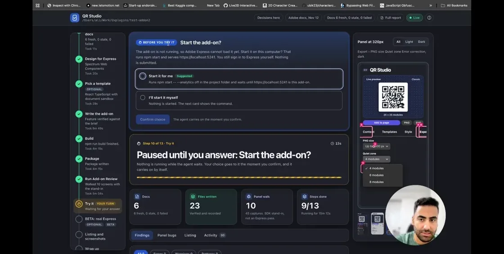

Build on existing work
Add a feature to a project you maintain, or start with a new add-on.
Adobe Express development
Describe the tool you want to build. Shape the plan, follow the build, and try a packaged add-on in Adobe Express.

Confirm the goal and the plan before project files are written.
Use Adobe’s docs, select a template, and implement the feature with the right Express APIs.
Verify the implementation, package it, and walk the panel in light and dark.
Load it in Express, share feedback with screenshots, and try the next build.
Add a feature to a project you maintain, or start with a new add-on.
The local dashboard shows the plan, work in progress, captures, and feedback.
Review draft marketplace copy and images before they are copied into your project.
Requires Node.js 18 or newer and Git.
git clone https://github.com/ThisIsMrAli/addon-developer-assistant.git
cd addon-developer-assistant
node install-agents.mjs --globalTry this prompt
Use express-addon-develop to build an Express add-on that creates QR codes and adds them to the current design.
Open your project in Codex after running the installer. Ask for express-addon-develop by name in a new chat.
Open your project in Claude Code after running the installer. Ask for express-addon-develop by name in a new chat.
Open your project in Cursor after running the installer. Ask for express-addon-develop by name in a new chat.
The installer also links the skill into supported locations for tools such as Gemini CLI and Windsurf. Keep the checkout on disk so the links continue to work.